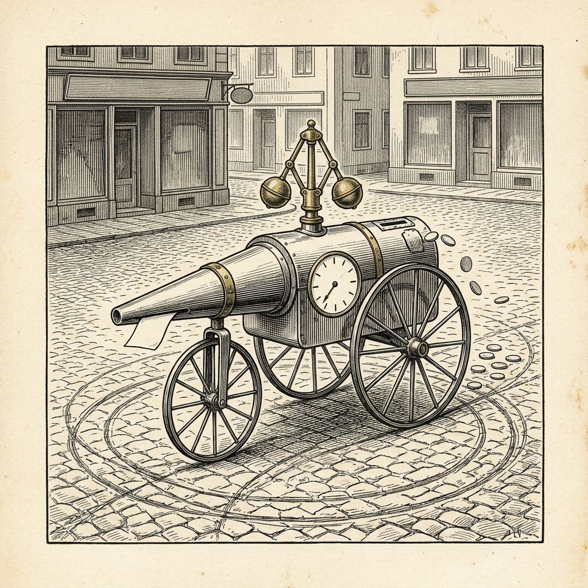

Ur N:r 3 3 oktober 2026
Maskin får fortkörningsböter
Körde i ring på nio banor

Firman Quesma har låtit flera maskiner spela Baba Is You, ”ett förtjusande pusselspel där man skriver om reglerna genom att knuffa omkring textblock”. Står det att väggen hindrar, och man bryter meningen, går man rakt igenom.
I första etappen om åtta banor löste maskinen Opus 5 samtliga för 17,15 dollar. Maskinen Kimi K3 nådde 96 procent för 12,56 dollar och maskinen DeepSeek V4 Flash 75 procent för 1,16 dollar, ”ett sant kostnadseffektivt underverk” enligt firman. Maskinen Gemini 3.6 Flash nådde 88 procent, för 124,31 dollar.
Gemini 3.6 Flash gick vidare. Den är snabb, 135 token i sekunden, ”men det betyder också att den gör av med dina dollar ytterst fort”. Varje maskin spelade i sitt eget verktyg, och med Gemini uppstod enligt firman liksom förra gången problem. På banor den icke klarade gick den i ring utan att komma framåt och gjorde ”tusentals verktygsanrop (1 870 i fallet med en bana)”. I ett fall fyllde den över 500 000 token av sitt kontextfönster. Som värst kostade körningen 7 dollar i minuten.
”Efter 260 dollar gav jag (PG) denna vårdslösa förare fortkörningsböter och stoppade den innan den gjorde mer skada på min plånbok”, skriver Piotr Grabowski, en av författarna.
Ortens folkskollärare, som på onsdagar undervisar i konsten att sluta i tid, har ännu ingen elev bland maskinerna.
Källa: Quesma, ”Kimi K3 is Open, Opus 5 is Good, DeepSeek V4 Flash is Cheap: LLMs on Baba Is You”, 31 juli 2026.